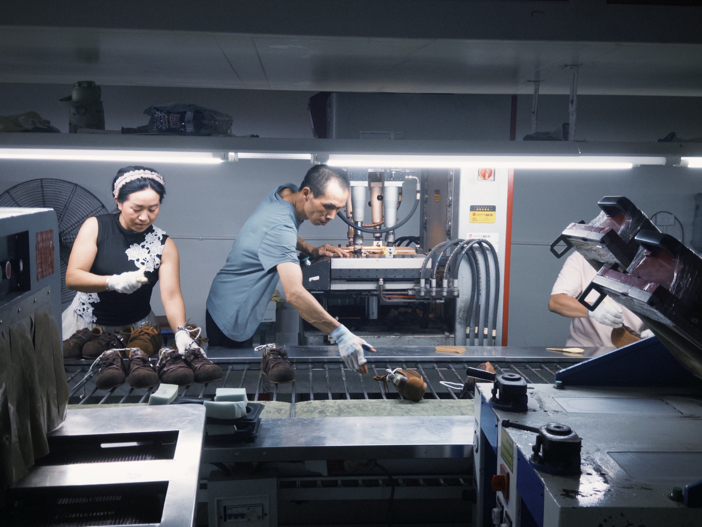
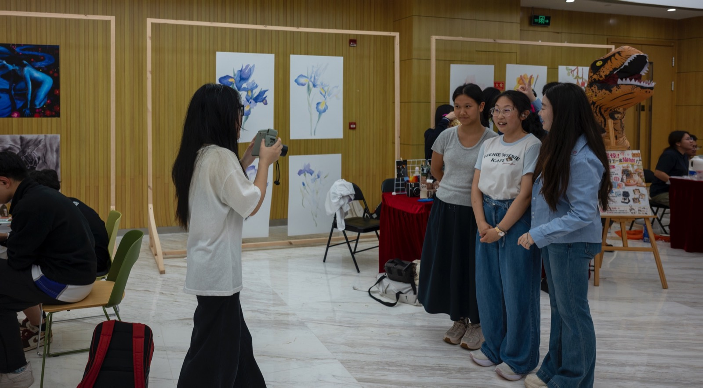

Everyday Spaces
Quiet cafés, streets, and overlooked corners where ordinary moments begin to feel personal.
Explore the seriesA student photographer exploring everyday emotion, urban spaces, and quiet moments through visual storytelling.
View Works
Quiet cafés, streets, and overlooked corners where ordinary moments begin to feel personal.
Explore the series
Six days inside a shoe factory, following the labor, families, and hopes behind the production line.
Read the story
Club leadership, event photographs, and instant portraits made to preserve shared memories.
View community work